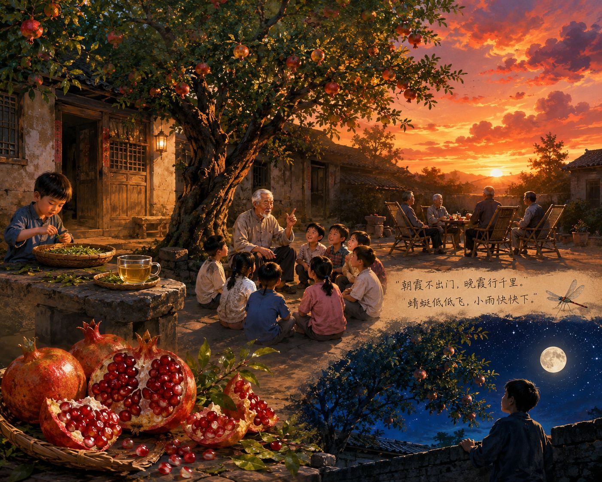

夕阳西下，石榴树下
终于，我还是到了这棵老石榴树下。似乎还是八年前的夕阳，八年前古朴的木头门与石凳，唯有那株石榴树变得苍老了。
思绪永远是飘飞不定的，随着春风的轻抚，好似还是太爷的轻言轻语抚摸着我的脸庞。 虽然存在着时间的隔阂，而一切仿佛又那么的接近，那么安详。
正如现在季节---春一样。石榴树上的叶子，早已成熟。繁茂的如同大篷绿伞，盖在太爷家的庭院前。也不知是谁发明了石榴茶。 太爷每到这时间，便开始摘叶、洗叶、晒叶。刚开始我一直没有弄明白他为何要晒这些“破草”。后来，我从太爷的杯中找到了答案。
石榴茶是黄色的。与其它茶一样，它入口很苦，过后总会有一阵清香。不同的是，这种香似乎能穿透皮肉，直达心灵，让人的血液里也渗透着。 就在这浓浓的茶香里，春天不知不觉的走了过去，迎来了夏的热情奔放。

更加常见的是在夕阳下，外公在庭院里摆桌椅，几个人坐在躺椅上消夏的场景。在夕阳的映衬下，你感到这不是断肠人在天涯，而是团聚的夕阳无限好。 少见的火烧云，却经常出现在这座小屋的上空。“朝霞不出门，晚霞行千里。”“蜻蜓低低飞，小雨快快下。”太爷的谚语往往脱口而出， 虽然我有的无法理解，有的一知半解，但是在我的记忆里，它们仿佛从来没有错过。最让我们这些孩子高兴的是，太爷喜欢讲故事， 从古代的牛郎织女到现代的365夜故事，在我们心中，太爷是知识渊博的，他会讲古今中外所有的故事。每当月亮高挂天空也是我们听得正入神的时候， 他也总是会说请听下回分解。这多了些古代说书的意味。无奈，我们只能依依不舍地回到院中，徒留一地月光。
渐渐的，天寒了起来。随着稻谷的丰收，那棵石榴树上的石榴表皮也微红了起来。“摘石榴喽----”等候已久的一声悠长的叫唤，震动着我雀跃的心。 窗外的石榴树上石榴早已露出了满嘴的牙，有几个已经掉了下来。还未等太爷搬出梯子，我已蹦起摘下，几个略低的果，轻轻一掰， 玛瑙似的果就迫不及待地蹦出，它们好像没有果皮似的，刚拈起两个，就滋的一声炸出汁来。甜透了我的心。
长大以后，我尝过许多茶，或名贵和普通，但是他们却没有太爷的石榴茶，传递给我的氤氲着的香与美； 同样的，我也曾吃过陕西临潼的软籽石榴，但比起太爷的石榴却索然无味。
思想被无情的拉回现实。抬头看，今天的夕阳似乎格外悠长，火烧云也似乎格外的美丽，在最后一抹红消失在天际，东方的圆月挂上树梢， 我乘着余晖缓缓地绕着围墙走着，在月光与太阳余晖的交相辉映下，石榴树仿佛变得更年轻了。
那一晚，我梦见无数繁星。
（指导老师：杨军）